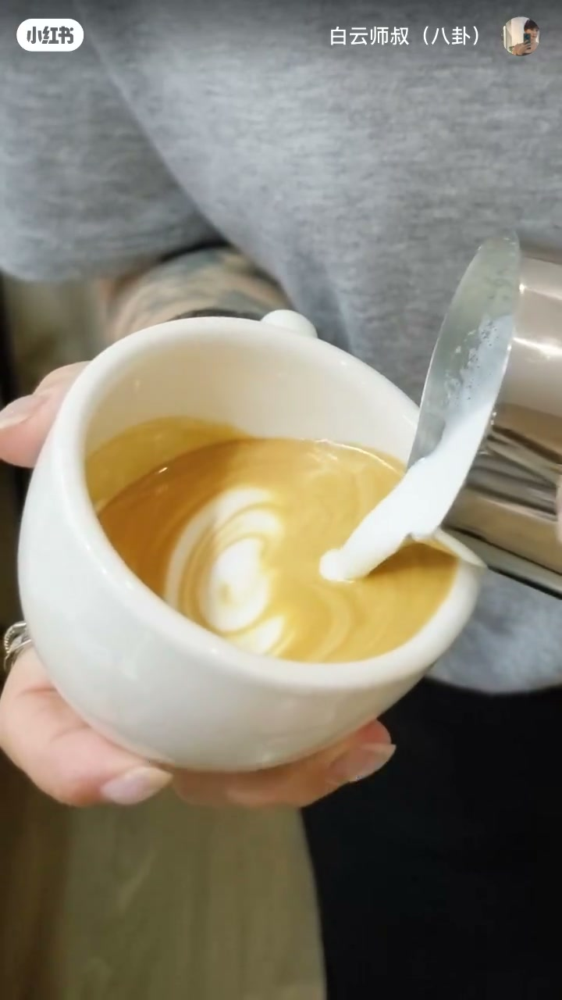
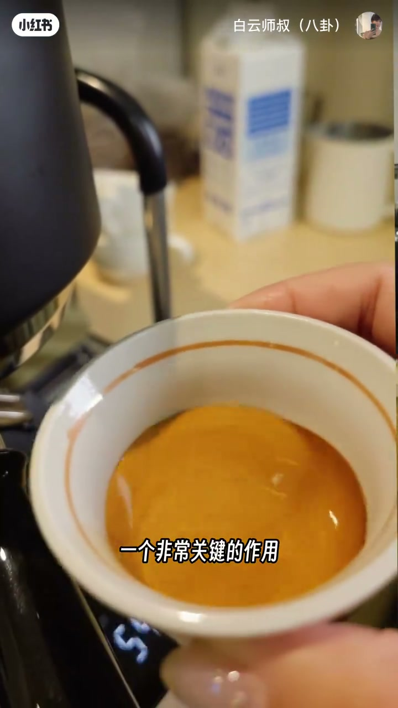
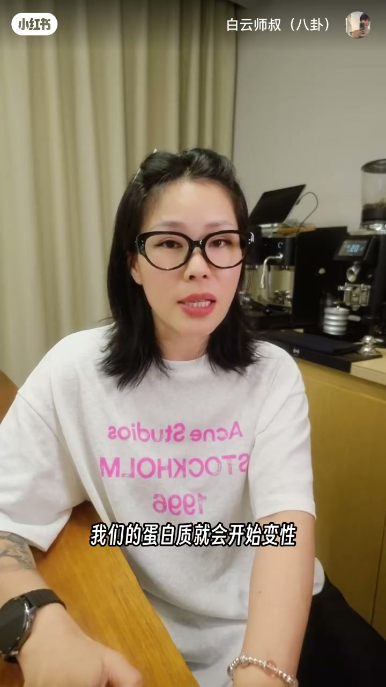
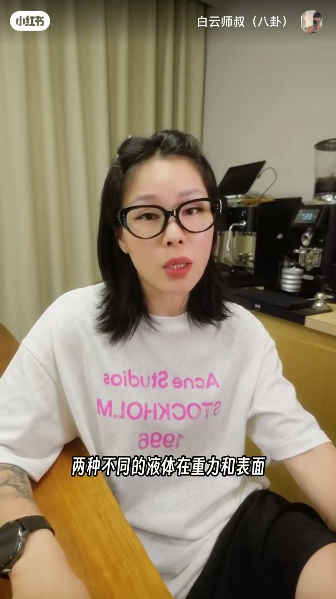

内容要点
白云师叔把拉花拆回物理题：奶泡浮在浓缩上是因为密度差；打发注入空气降密度，打绵让气泡均匀稳定；crema 是缓冲层；温度过高蛋白质分解会导致分层。理解原理是为了知道「为什么要控制打发时间」，而不是只会照着做。
知识结构
打发后牛奶密度低于浓缩，故浮在表面，类比油浮水上；打发注气、打绵稳结构。
crema 作缓冲助奶泡铺开；crema 差则直沉。温度越高蛋白质越易分解，超约 70℃ 易分层。
打发过度会沉底因结构不稳。拉花=两液体在重力与表面张力下成图；下期预告融合高度。
拉花不是玄学手感课：先守密度差（打发与绵密），再守 crema 与温度，最后才谈图案。原理的用处是让你主动控制变量——尤其是打发时间——而不是机械复述步骤。
00:00-00:20奶泡为何浮着：密度差；打发与打绵
开场设问：为什么奶泡浮在咖啡上而不是沉下去？答案是密度差——打发后牛奶密度低于浓缩，所以会上浮，就像油浮在水上；轻的液体浮在重的液体上面。00:08 俯拍倒奶画面，把「浮在表面起形」变成可见事实。
操作拆两步：打发是往牛奶注入空气、降低密度；打绵是让气泡更均匀，结构更稳定。没有稳定结构，后面的图案无从谈起。

00:20-00:41crema 缓冲层；温度与蛋白质
crema 被点名为关键缓冲层：帮助牛奶均匀铺开，而不是直接沉入咖啡。若 crema 不好，奶泡一到就会直沉。00:22 杯面完整金棕 crema 特写，对应「非常关键的作用」。
温度同样关键：越高，蛋白质分解越严重，气泡越不稳。作者给出经验线——超过约 70℃ 蛋白质开始分解，拉花容易分层，变成「奶是奶、泡是泡」。00:38 口播字幕直接出现蛋白质变性表述。


00:41-01:10原理有什么用；拉花是物理题
理解密度差，就能解释打发过度为何沉底：气泡结构不稳，密度关系反而恶化。原理的用处是「知道为什么要这么做，而不是照着做而做」——例如因此去控制打发时间。
收束定义：拉花本质上是一道物理题，两种不同液体在重力和表面张力作用下形成不同图案。01:00 字幕钉住「两种不同的液体在重力和表面」。片尾预告下期「融合的高度」决定拉花上限，并完成系列署名告别。

完整转录（50段）
以下文本由 Whisper medium 模型自动转录，可能存在少量识别误差，已尽可能修正。
你有没有想过为什么我们的奶泡它是浮在这个咖啡上面
而不是沉下去呢
答案呢就是密度差
打发之后的牛奶的密度低于浓缩咖啡的这个密度
所以呢它就会浮到上面
这就像油会浮在水上是一样的
氢的液体呢自然是浮在重的液体上面啊
那打发呢是往牛奶里面注入空气
降低了它的密度
而打棉呢就是让这些气泡呢
更加的均匀
让它的结构更加的稳定
那crema在这里起到了一个非常关键的作用
它是一个缓冲层
帮助牛奶呢均匀的扑展开来
而不是怎么直接沉入到咖啡里面
如果crema不好呢
奶泡一到它就会直接沉下去
温度也非常重要
如果你的温度越高
你的蛋我们的这个蛋白质的分解呢就越严重
那它气泡的结构就会越不稳定
那这也就是为什么
超过70度呢我们的蛋白质就会开始分解
这个时候你就会发现
拉这个花它怎么就开始分层了呢
奶是奶泡是泡
理解了密度差
你就知道为什么打发过度的这个奶泡呢
它就会开始沉底
因为它的气泡结构不稳定
它的密度差反而变大了
那么有人就要问
我理解这个原理有什么用呢
那当然有用啊
你这样就是知道你为什么要这么做
而不是照着做而做
就比如说你知道的密度差
那你就会知道我要控制我的什么打发时间
拉花本质上呢它就是一道物理题啊
两种不同的液体
在重力和表面张力的作用下
形成的不同的图案
理解了原理之后呢
我们下一期来聊一聊融合的高度
因为它决定了你拉花的上限
ok series coffee catch your talk
我是白云师叔
我们下个视频再见
拜拜